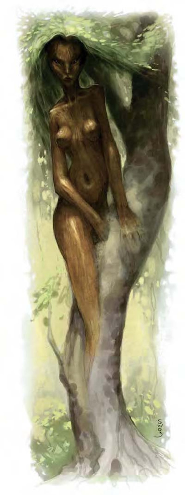

| 资料栏位 | 树精 (Dryad) 中型精类 |
| 生命骰 | 4d6（14HP） |
| 先攻 | +4 |
| 速度 | 30英尺（6格） |
| 防御等级 | 17（+4敏捷、+3天生）、接触14、措手不及13 |
| 基本攻击/擒抱 | +2 / +2 |
| 攻击 | 匕首+6近战（1d4/19-20）；或精制长弓+7远程（1d8/x3） |
| 全力攻击 | 匕首+6近战（1d4/19-20）；或精制长弓+7远程（1d8/x3） |
| 占据/触及 | 5英尺 / 5英尺 |
| 特殊攻击 | 类法术能力 |
| 特殊能力 | 伤害减免5/寒铁、栖木而生、理解动物 |
| 豁免 | 强韧+3、反射+8、意志+6 |
| 属性 | 力量10、敏捷19、体质11、智力14、感知15、魅力18 |
| 技能 | 脱逃+11、驯养动物+11、躲藏+11、自然知识+11、聆听+9、潜行+11、骑术+6、侦察+9、生存+9、绳技+4（捆缚+6） |
| 专长 | 强韧加强、武器娴熟 |
| 环境 | 温带森林 |
| 组织 | 单独或丛生（4-7） |
| 挑战级数 | 3 |
| 宝藏 | 标准 |
| 阵营 | 通常混乱善良 |
| 进化 | 视人物职业而定 |
| 等级修正值 | ― |
树精诞生于最古老树木的树皮，幼年时就像一段新生的枝干，成熟后则具有女性的外型，一对杏眼大而明亮，带股狂野不羁的气息，头发像是层层迭迭的落叶，皮肤如木质但有光泽。
树精是神秘的野生生物，只出没在最隐密的树林中。她们的天职是保护树木不受砍伐，因此，有时会跟林中伐木的人类发生冲突。一般相信，树精会魅惑冒险者帮助她们保护栖息地或追猎破坏森林的人，即使这些敌人只是人类伐木工或樵夫。
树精的种种作为都十分神秘，即使对林中生物来说也是如此。传说中，树精一旦看上英俊潇洒的精灵或人类男性，就会魅惑他们并当作禁脔。然而，因为树精几乎不跟其他生物往来，这些传说可能与事实相去甚远。树精比较可能只会魅惑擅闯的入侵者，并转而派遣他们对付其他不易处理的危机。
树精的外观近似精灵女性，但肌肤如同木头和树皮一样，头发由片片树叶叠合而成，还会随季节改变颜色。
树精多半独居，但极少数情况下也会聚集在一处，数量甚至高达七只。
树精通晓通用语、精灵语和木族语。
战斗聪明害羞却又果敢狂野，树精的天性令人难以捉摸，但更增添了诱人的魅力。她们通常会尽力避免战斗，除非刻意现身，一般人根本无法察觉。如果受到威胁或急需盟友时，树精会使用"魅惑人类"和"暗示"能力来控制敌人，使其转而对付其他人。然而，若栖身的树木遭受危险时，树精会疯狂发动攻击。
类法术能力：随意施展――"纠缠术"（DC=13）、"与植物交谈"、"树化术"；每天3次――"魅惑人类"（DC=13）、"沉睡术"（DC=15）、"融身入林"；每天1次――"暗示"（DC=15）。施法者等级6，豁免检定DC的调整值与感知调整值相同。
栖木而生（超自然）：每只树精都和一棵巨大的橡树有种神秘的系缚，永远无法离开树木300码之外的距离。违背的树精会生病，并在4d6小时后死去。树精栖身的橡树并不会发出任何魔法。
理解动物（特异）：与德鲁伊的"理解动物"职业特性相同，但树精在检定时具有+6种族加值。